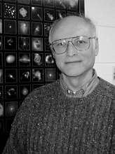

Please note: the AAS Obituaries are temporarily being hosted on this website while their full content is being ingested into the PubPub publishing platform newly adopted by the Bulletin of the American Astronomical Society. When the migration is complete, your existing links will take you to the final, migrated content. Contact peter.williams@aas.org with any questions.
Leon Van Speybroeck (1935-2002)
Leon Van Speybroeck, a master designer of X-ray telescope mirrors and the telescope scientist for the Chandra X-ray Observatory, died in Newton, Massachusetts, on 25 December 2002, shortly after learning that he had metastatic melanoma. Leon was born on 27 August 1935 in Wichita, Kansas. His father, Paul, was Assistant Treasurer and head of the accounting department at Beech Aircraft, and his mother, Anna Florence (Utley), was a homemaker. Both parents died in 1996. Leon's younger sister, Saundra, is a nurse and his younger brother, John, is a surgeon.
Leon received a BS in 1957 and a PhD in 1965, both in physics, from MIT. His PhD thesis, ``Elastic Electron-Deuteron Scattering at High Momentum Transfer," was carried out under the supervision of Henry Kendall and Jerome Friedman. Leon spent two more years at MIT as a research associate.
In 1967, he was hired by American Science and Engineering (AS&E) in Cambridge, Massachusetts, and joined the X-ray astronomy group led by Riccardo Giacconi, who received the 2002 Nobel Prize in Physics for contributions to astrophysics that led to the discovery of cosmic X-ray sources. Leon soon became involved in the design and construction of high-resolution, grazing-incidence X-ray telescopes, starting with the Apollo Telescope Mount flown on NASA's Skylab from 1973 to 1974. A series of high-resolution X-ray images of the solar corona led to dramatic changes in ideas about the solar corona, with new emphasis on magnetic dynamo processes.
When the Smithsonian Astrophysical Observatory and the Harvard College Observatory morphed into the Harvard-Smithsonian Center for Astrophysics (CfA) in 1973, Leon, with Giacconi and other senior X-ray astronomers from AS&E, joined the CfA and formed the high-energy astrophysics division. Leon guided the design and development of the X-ray mirrors on NASA's Einstein Observatory, which was flown from 1978 to 1981 as the first cosmic X-ray observatory with an imaging telescope. Along the way, he helped the team to solve numerous technical challenges-for example, floating the heavy optics in a mercury bath so that their roundness could be measured without gravitational distortion. The Einstein data, which showed that virtually all classes of astronomical sources are X-ray emitters, opened the door for X-ray astronomy to join the other wavelength domains as an equally important discipline. In recognition of his accomplishments, Leon received the George W. Goddard Award in 1985 from the International Society for Optical Engineering.
While the Einstein Observatory was still operating, work began on a successor with a larger effective area and substantially higher angular resolution. Leon led the technology development and then the flight program for the optics on this Advanced X-ray Astrophysics Facility (AXAF). He insisted on systematic analyses and thorough understanding of all the processing steps and metrology data. He negotiated the establishment of incentives and goals for mirror smoothness, and achieved an increase in the fraction of 6-keV X-rays encircled in a 1-arcsecond diameter from 20% to 60%. With his guidance and the efforts of many superb engineers and scientists, polishing and metrology equipment was designed, built, tested, and used at Hughes Danbury Optical Systems Inc, located in Danbury, Connecticut. The equipment was utilized to fabricate X-ray mirrors at the 0.5-arcsecond level of performance-10 times better than any previous X-ray optic.
Following the successful fabrication of the optics, Leon worked with the team at Optical Coating Laboratory Inc, in Santa Rosa, California, to establish a process for depositing iridium coatings that provide a relatively high efficiency up to 10 keV and a very stable final surface.
The AXAF telescope comprises four pairs of mirrors nested one inside another to increase the collecting area. A major challenge involved assembling the eight cylindrical optics into a single high-resolution telescope. Leon and the team at Eastman Kodak Company in Rochester, New York, designed a 50-foot-high vertical assembly tower that satisfied demanding environmental controls. The mirror elements were held as stress free as possible, maneuvered into alignment, and bonded into place with a slow-curing epoxy to a precision of a few tenths of an arcsecond. Following its launch aboard the space shuttle Columbia in July 1999, AXAF was renamed the Chandra X-ray Observatory. Up to the time of his death, Leon had been leading a team that used Chandra, plus microwave observations of galaxy clusters, to determine the cosmic distance scale. His colleagues expect to publish their results in late 2003. In recognition of his leadership and extraordinary contributions to Chandra, Leon received the 2002 Bruno Rossi Prize of the American Astronomical Society's high-energy astrophysics division. He died two weeks before he was scheduled to deliver his acceptance speech. Despite his illness, he had crafted a marvelous talk illustrating the tremendous advances enabled by the Chandra telescope. One of us (Tananbaum) presented his talk, which received an enthusiastic response from approximately 1000 AAS members.
Leon married Erin Harrington in 1959. She survives him along with their daughter Elaine and her husband Lane Kendig; son David, his wife Jennifer Hanson, and their twin daughters Madeline and Nina; and son Alexander and his companion Sherie Davis. When not involved with X-ray telescopes or family trips to National Parks, Leon designed and built exquisite furniture in his elaborate workshop, where every tool hung neatly from its pegboard hook. On 8 February 2003 more than 200 friends and family members gathered at the Harvard Science Center for a Remembrance Service. Many smiles and more than a few tears were seen as people recalled and celebrated Leon's life.
Leon was an amazing individual, respected by his colleagues as an outstanding physicist, mathematician, programmer, and engineer who could solve just about any problem. He set and met incredibly high standards in his professional and personal endeavors. He was modest about his accomplishments, but would acknowledge that ``Chandra has a pretty good mirror" when colleagues would share exciting new results made possible by his dedicated efforts and unique skills. It was a privilege to know him.
Photo courtesy of K. Kowal
Obituary written by: Paul Gorenstein (Harvard-Smithsonian Center for Astrophysics), Harvey Tananbaum (Harvard-Smithsonian Center for Astrophysics)
BAAS Citation: BAAS, 2003, 35, 1477
SAO/NASA ADS Bibcode: 2003BAAS...35.1477G